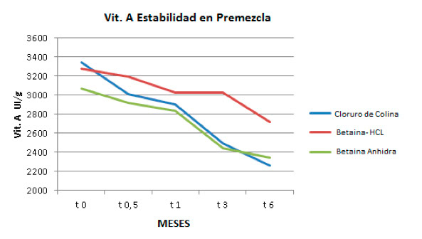

La Betaína es un aditivo que se ha utilizado desde hace algunas décadas, este puede ser clasificado como un aditivo funcional debido a que no solo tiene un aporte nutritivo, si no que ejerce un efecto beneficioso en los animales (salud y productividad).
Este aditivo se usa con mayor frecuencia en la elaboración de alimentos. Es un compuesto aminoácido, derivado de la trimetil-glicina, que se encuentra naturalmente en la mayoría de las plantas y animales, obtenido de forma natural por su extracción en la pulpa y melaza de la remolacha azucarera (presentándose como Betaína Anhídra), sin embargo, a pesar de aportar beneficios para los animales su forma natural presenta problemas en torno a la disponibilidad (cosecha estacional) y a la higroscopia, lo que dificultaba el uso a nivel de las plantas de alimento para animales (almacenamiento, manejo, transporte, aplicación y dosificación), además la higroscopicidad puede causar degradación o alteración en la composición de algunos ingredientes, Kampf et al. (2012) reporta 25% más de degradación en la vitamina A de premezclas que contenían Betaína Anhídra.
El creciente interés por la incorporación de la Betaína en los alimentos balanceados para animales, generó una mayor demanda, lo que promovió investigaciones que dieron origen a la obtención de la Betaína sintética, que solventaría los problemas de disponibilidad e higroscopia manteniendo los beneficios aportados por el aditivo.
La Betaína Hidroclórida (Betaína HCL) es la forma sintética de la Betaína, lo que permite la disponibilidad a lo largo de todo el año, mayores volúmenes de producción y se caracteriza por tener baja o nula higroscopia (Navarro, 2012), eliminando así el problema que se presentaba en las plantas de alimento en torno al almacenamiento, así mismo, evita la degradación o alteración de otros ingredientes de las premezclas. Kampf et al. (2012), reporta 7.52% de absorción de agua en premezclas que estuvieron expuestas a 80% de humedad relativa con una temperatura constantes cuando se usó Betaína HCL mientras que la Betaína Anhídra reporto valores de 11.79%, Así mismo, la estabilidad de la Vitamina A posterior a 6 meses de almacenamiento se mantuvo superior cuando se usó Betaína HCL (Grafica 1).
Grafica 1. Estabilidad de la Vitamina A en Premezcla. Adaptado de Kampf et al. (2012).
A continuación, se describe a fondo las funciones y beneficios del uso de Betaína en aves y cerdos:
• Se ha considerado principalmente como un osmoregulador, ya que protege las enzimas y membranas celulares contra la inactivación inducida por ósmosis (Suárez y Van der Aa., 2012), controlando así la entrada y salida de agua de las células y mejorando el balance de agua y evitando la apoptosis celular. Esta función convierte la Betaína en una excelente alternativa en los países tropicales, especialmente para combatir el estrés calórico. Estudios relacionados demuestran que el estrés calórico y la deshidratación de los animales en producción puede ser reducida al adicionar Betaína a la dieta (Gómez et al., 2012), ya que, mejora la ganancia de peso y el índice de conversión. Greimann. (2010) reportó alrededor de 7% en cerdos con peso vivo de 30-35 Kg, estos efectos pueden ser observados tanto en cerdos (Wray-Cahen et al., 2004) como en las aves (Hassan et al., 2045), adicionalmente, disminuye la temperatura rectal (43.2 °C a 41.9°C) y la hiperventilación en las aves (78.3 a 63.9 respiraciones/min) con respecto a la dieta control negativo. (Attia et al., 2009).
La osmoregulación aporta a los animales otros beneficios, estudios realizados por Suárez y Van der Aa. (2012) mencionan que la energía que se ahorra a través de este proceso puede ser canalizada en el crecimiento de los animales, favoreciendo especialmente la deposición de proteína a lo largo del tiempo (CAENA, 2012).
• La relación existente entre el aumento del crecimiento y la síntesis de tejido magro en los animales ocurre por las funciones metabólicas y gastrointestinales de la Betaína, donde se destaca como donador de metilos y participa especialmente como un intermediario en el catabolismo de la colina y la metionina, componentes importantes que colaboran en la síntesis de membranas y proteica corporal (Attia., 2005). En tal sentido, Schroeder (2015), sugiere que el uso de Betaína promueve la síntesis del tejido magro en los animales, obteniéndose así canales más magras. Según Gómez (2014) el efecto de la Betaína en el metabolismo de los lípidos se atribuye a la mayor disponibilidad de la metionina y cistina para la síntesis y deposición de proteína en los animales, por otra parte, se ha observado cambios a niveles hormonales y en factores de crecimiento que se involucran en la síntesis y degradación de la grasa, así como, más baja actividad de enzimas lipogénicas (Pirompud et al., 2005).
• Chendrimada et al. (2002), señala que la participación de la Betaína en la síntesis de colina y adrenalina cumple con un papel fundamental en los mecanismos de respuesta inmune del organismo. La incorporación de la Betaína cuando se presenta desafíos por coccidios en las aves, reestablece el equilibrio osmótico del intestino y contribuye con las mejoras de los parámetros productivos cuando tiene un uso combinado con ionóforos (Silversides et al., 2010).
• A nivel nutricional la Betaína puede ser incorporada en la dieta con aspiraciones economizantes en relación con la colina y la metionina, ya que existe una estrecha y compleja relación entre el metabolismo de estas sustancias, debido a que la Betaína puede reemplazar la colina necesaria para el ciclo de remetilación de la homocisteína, pero no puede reemplazar la colina necesaria para sintetizar acetilcolina. Por lo que solo se considera un reemplazo de los requerimientos máximo de 50% de la colina a partir de la Betaína (Dilger et al., 2007). Así mismo, Beghaei (2009) ratifica que se puede reciclar metionina, pero en ningún momento reemplazarla totalmente. En torno a esto, las investigaciones realizadas por Van der Klis y Lensinng (2007) al estudiar la bioequivalencia entre la Betaína y la colina/metionina en pollos de engorde, muestran que aun cuando la colina estuvo totalmente reemplazada, los requerimientos de metionina de la dieta disminuyeron de 25 a 30% y dentro de este intervalo de sustitución no se vio afectado el comportamiento productivo de las aves. A pesar de que existen diversas investigaciones en torno a este tema, no deja de ser una aplicación teórica que debe ser usada luego de considerar un análisis practico de su implementación (Suárez y Van der Aa., 2012).
Finalmente, podemos considerar la incorporación de la Betaína HCL, como la mejor alternativa para incorporar Betaína en las dietas de las aves y cerdos, ya que su bajo o nulo nivel de higroscopicidad permite el fácil manejo en planta de alimentos balanceado y a pesar de ser una fuente sintética mantiene sus propiedades y beneficios aportados a los animales, permitiendo así contrarrestar los efectos del estrés calórico, promoviendo el buen funcionamiento del sistema inmunológico y las mejoras de los parámetros productivos lo que podría rentabilizar aún más la producción animal.